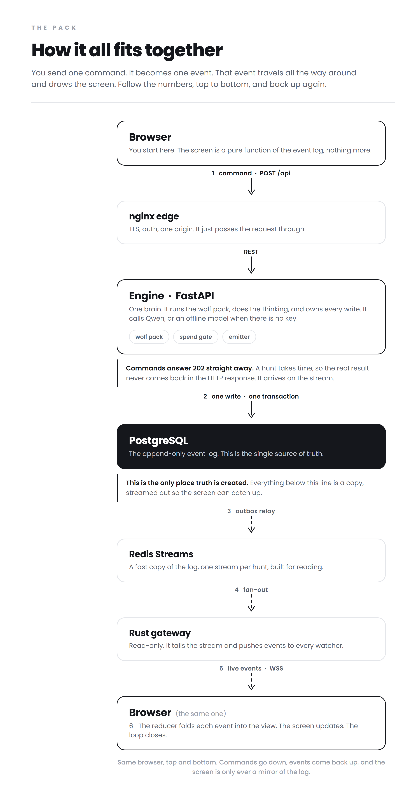
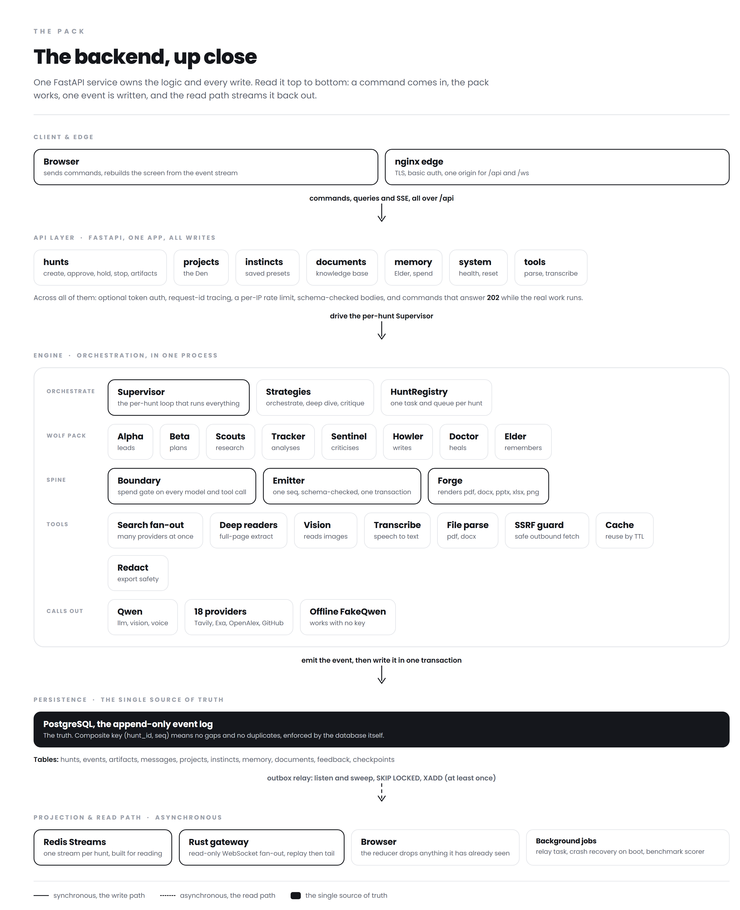
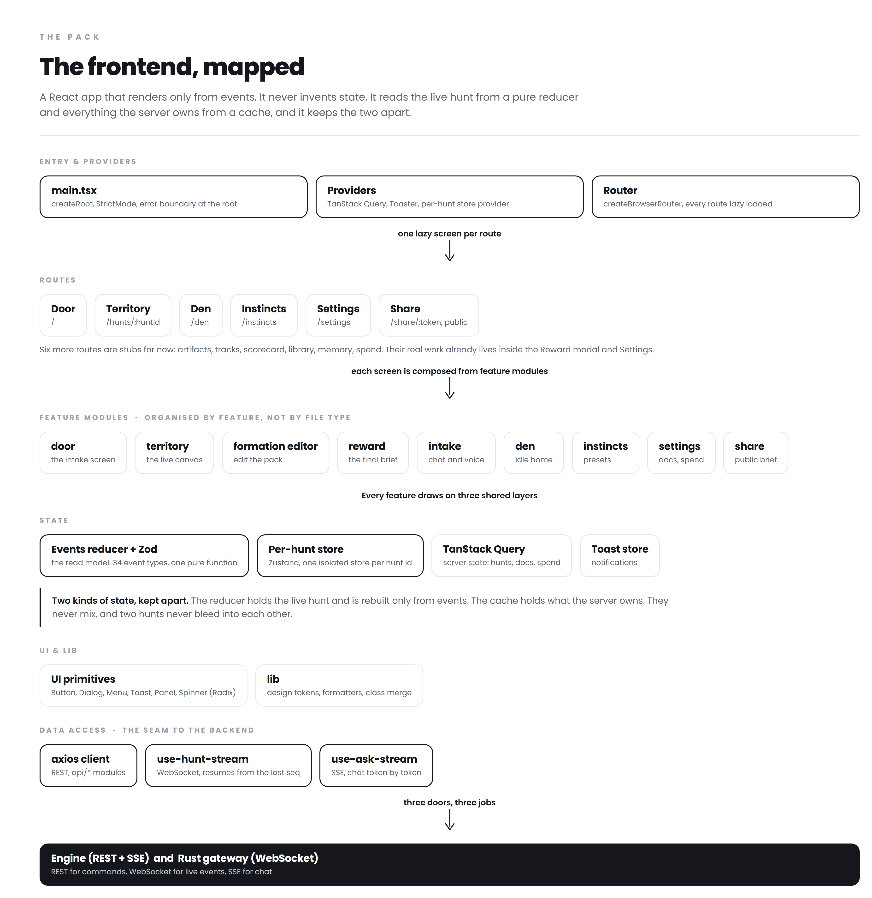
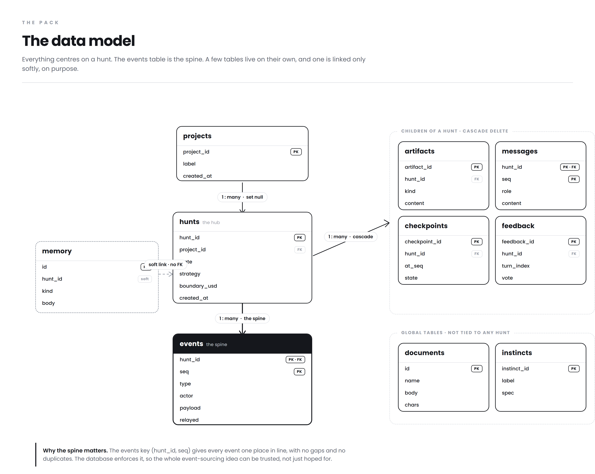
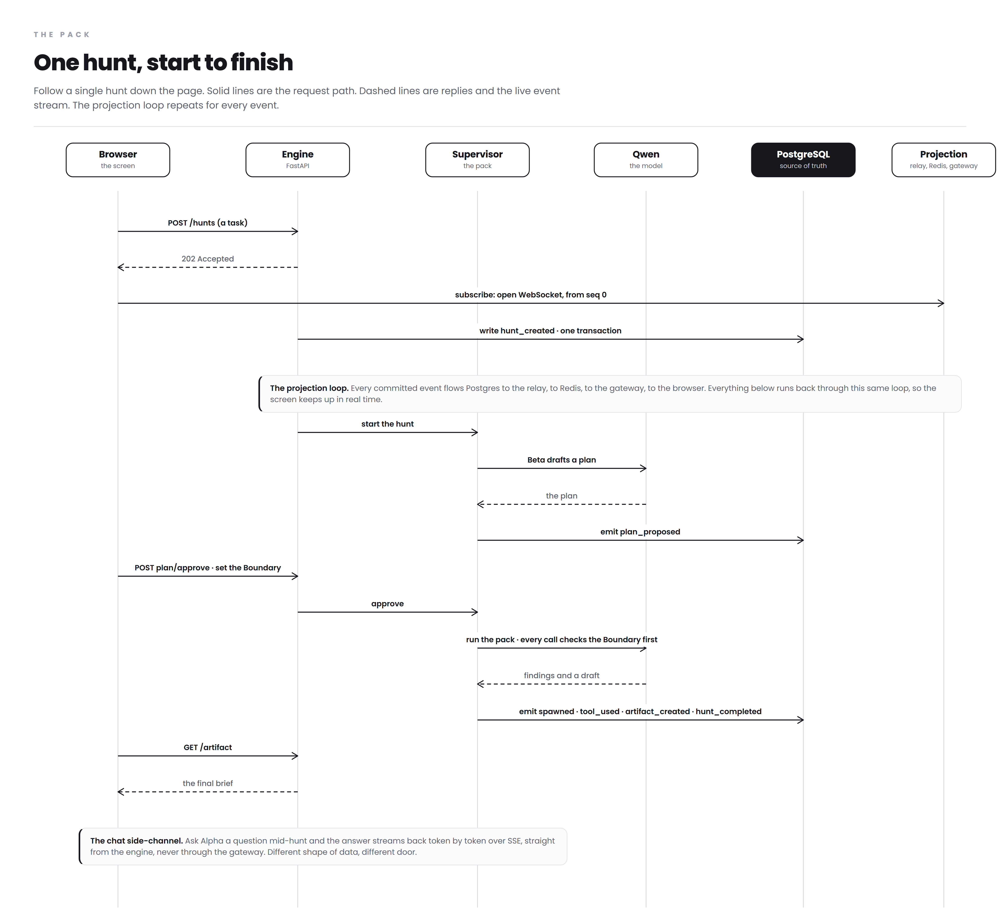

Here is the whole thing in one line. You give the Pack a job, a team of AI wolves goes and does it, and you watch them work live.
The wolves are not the hard part. The hard part is making sure the screen and the database never disagree. That is the quiet bug that kills systems like this. So I made one rule and built everything else around it. Every single thing that happens becomes an event, and those events are the only truth.
When you send a command, the engine does the work and writes one event to Postgres. That is it. One write, one source of truth. A relay then pushes that event out to Redis, a small Rust gateway streams it to your browser over a WebSocket, and the browser rebuilds the screen from the events it receives. The browser has no opinion of its own. It is a mirror of the log, nothing more.
That is why the picture on the next page is a loop. Commands go in across the top, steps 1 to 3. The write lands in Postgres. Then the same event comes back out along the bottom, steps 4 to 6, and shows up on your screen. Follow the numbers and you have understood the whole system.
One more thing I like. The brain is swappable. With no API key the Pack runs on a built in offline model and still works from end to end, which is great for demos and tests. Drop in a real Qwen key and it switches over on its own. Nothing else has to change.

The engine is a single Python service built on FastAPI, and it owns the two things that matter most. All the logic, and all the writes. I kept it as one unit on purpose. It is easier to reason about, and there is only one place where truth gets created. Read the picture from top to bottom.
Commands come in and get a 202 right away. That is on purpose. A hunt takes time, so I do not make you wait on the HTTP call. I accept the command, start the work, and the real answer reaches you on the event stream. The API never pretends to be finished when it is not.
Inside, a Supervisor runs the wolf pack. Alpha leads, Beta plans, Scouts research, Tracker analyses, Sentinel criticises, Howler writes. Before any of them calls the model or the web, that call passes the Boundary, which is a spend gate. Models cost money, so nothing runs without checking the budget first. A hunt cannot quietly drain your wallet.
The Emitter is the part that keeps everyone honest. One sequence number per hunt, and every event checked against a fixed schema before it is allowed in. Forge turns the finished work into real files like PDF and DOCX. The tools layer does the searching and reading, and it has a guard so a hunt can never be tricked into reaching something private on our own network.
Then the spine. The event is written to Postgres in one transaction. The outbox relay picks it up safely and drops it onto Redis. The Rust gateway streams it out. That gateway is deliberately simple. It only reads, it never writes. It is a fast pipe and nothing more. If it ever gives me trouble I can delete it and let FastAPI serve the stream directly, and nothing upstream would have to change. That is the kind of decision I like. Strong, but easy to throw away.

The screen is a React app, and it follows the same rule as everything else. It renders only from events. A pure reducer takes the event stream and builds the state of the hunt. No event, no change. That is what makes the live canvas trustworthy. It genuinely cannot show you something the engine did not say.
I split state into two clean halves, because they are two different problems. Anything the server owns, like your past hunts, your documents, your spend, is handled by TanStack Query, which knows how to cache and refetch. Anything about the live hunt is handled by the reducer. I do not mix them, and I do not copy data from one into the other.
Each hunt also gets its own isolated store. Two hunts can never bleed into each other, and coming back to a hunt shows you exactly where it was, with no flicker and no replay from the start.
The code is organised by feature instead of by file type. Door, territory, reward, and so on. A change to one part of the product stays in one folder. And the app talks to the backend through three clear doors. REST for commands, a WebSocket for the live events, and SSE for token by token chat. Three doors, three jobs, no confusion.

This is the shape of the truth. Everything centres on hunts, and the most important table is events, the append only spine.
The events table has a composite key, hunt_id and seq together. That one small choice does a lot of work. Every event gets an exact place in line, you cannot get a gap, and you cannot get a duplicate. The database itself enforces it. That is the backstop that lets me trust the whole event sourcing idea instead of just hoping it holds.
Around the hunt sit its children. The artifacts it produced, the messages you exchanged, the checkpoints for pausing and resuming, and the feedback you gave. They all cascade. Delete a hunt and they go with it, cleanly. Projects group hunts, but loosely. Delete a project and its hunts survive, just unlinked.
Two tables stand on their own, on purpose. Documents, your knowledge base, and instincts, your saved presets, are global, because they are not tied to any single hunt. Memory is a soft link rather than a hard one, because what the pack learns is meant to outlive the hunt that taught it. I thought about what should die with a hunt and what should not, and the schema says it out loud.

Let us watch one real hunt from start to finish.
You send a request to start a hunt. You get a 202 immediately, and at the same moment you open the WebSocket and start listening. The engine writes the first event, and this is the loop from the overview, that event travels out through the relay, Redis, and the gateway, and lands back on your screen. Steps 5 to 7 then repeat for every event that follows. That is the heartbeat of the whole thing.
Beta drafts a plan. You approve it and set your Boundary. The pack runs. Every model and tool call passes that spend gate. As the wolves work they emit events, like spawned, tool used, artifact created, and hunt completed, and each one flows back to you the same way. You are never guessing what is happening. You are watching it happen.
There is one path that does not touch the gateway, and that is the chat side channel. When you ask Alpha a question in the middle of a hunt, the answer streams straight back from the engine, word by word. It is a different kind of data. A stream of words, not a log of facts. So it takes a different door. It is a small detail, but it is the kind of thing that separates a system that was designed from one that just grew.

That is the Pack.
Take away the wolves and the canvas and the nice words, and one idea is holding the whole thing up. Events are the truth, and everything else is a function of them.
That is why the screen can be trusted. It is why nothing gets lost. It is why the read side and the write side never fight, and why I could throw the gateway away tomorrow without worrying. Every hard decision in this system gets easy once you accept that one rule.
Simple idea, built properly. That is the whole game.